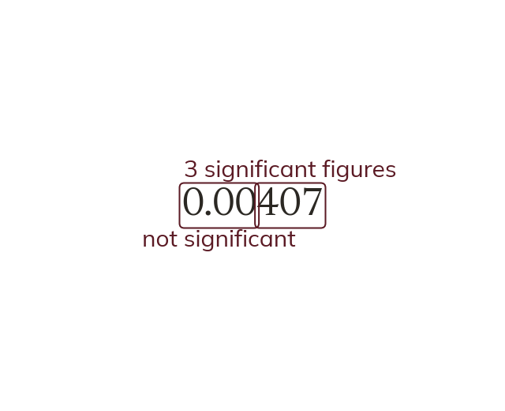

Counting significant figures
Count significant figures from the first non-zero digit. Leading zeros never count. A zero between other digits always does.
Significant figures are counted from the first non-zero digit; leading zeros are never significant, but a zero sitting between other digits always is. Rounding to a given number of significant figures follows the same next-digit rule as rounding to decimal places.